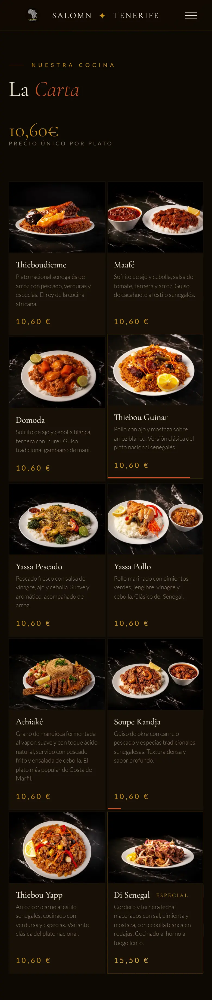

Salomn Tenerife


Le hicimos la imagen de marca, los carteles del local, la web y la ficha de Google. La web avisa de si está abierto en ese momento, enseña la carta con sus precios y deja reservar mesa por WhatsApp. Y tienen un panel para cambiar cada día los platos que hay.
- Imagen de marca
- Cartelería
- Web
- Ficha de Google